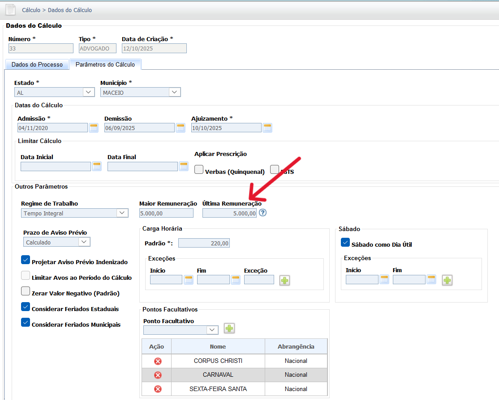

Manual Interativo de Cálculos Trabalhistas
Um guia completo e interativo para entender os cálculos na esfera judicial trabalhista.
8.1. Liquidação das Verbas Trabalhistas
Após o lançamento e cálculo de todas as verbas trabalhistas e seus reflexos, o sistema PJe-Calc permite a liquidação e a impressão detalhada da planilha de cálculo, fundamental para a juntada ao processo judicial.
A tela inicial do PJe-Calc Cidadão oferece as opções de Criar Novo Cálculo, Buscar Cálculo existente ou Importar Cálculo. O menu lateral exibe todas as etapas do processo de liquidação, como Dados do Cálculo, Faltas, Histórico Salarial e Verbas.
A configuração inicial do cálculo é feita na tela "Dados do Cálculo", que é dividida em "Dados do Processo" e "Parâmetros do Cálculo". É nesta etapa que se define o reclamante, reclamado, o período contratual (admissão/demissão) e os critérios de apuração, como prescrição e aviso prévio. (Cálculo Nº 33).
Dados do Processo
Parâmetros do Cálculo
A tela "Faltas" permite o registro manual de ausências ou a importação de um arquivo CSV externo. É possível indicar a data inicial e final da falta, se ela foi justificada e se deve reiniciar o Período Aquisitivo de Férias.
A tela de Cartão de Ponto permite o lançamento ou a importação da jornada de trabalho para fins de apuração de horas extras, horas noturnas e intervalos.
As imagens abaixo demonstram o lançamento ou a importação da jornada de trabalho.
Geração do Cartão de Ponto
Parametrizações do Cartão de Ponto

Visualização/Alteração e Exclusão do Cartão de Ponto

Lançamento de Ocorrências
6. Formulário de Jornada Padrão

7. Importação de Arquivo de Ponto (CSV)
8. Apuração de Horas e Detalhes do Dia

9. Resumo do Cálculo e Totais
O Histórico Salarial é onde todas as parcelas salariais pagas, devidas ou calculadas são cadastradas. Esta etapa é crucial para a base de cálculo de verbas e deduções.
Galeria de Imagens do Histórico Salarial (Ordem Sequencial)
Abaixo estão as telas do Histórico Salarial na ordem de **1 a 7**, cobrindo a busca de parcelas, formas de lançamento, exemplos, detalhes de incidência e importação de dados.
1. Tela de Busca e Criação de Parcela

2. Importação e Cadastro de Nova Parcela (Valor Informado)

3. Seleção de Nome da Parcela (Adicionais, Comissões, etc.)

4. Lançamento Detalhado e Incidências
5. Grade de Lançamento (Base Calculada em Salário Mínimo)

6. Tela de Cadastro de Parcela (Tipo Valor Informado)

7. Tela de Cadastro de Parcela (Tipo Valor Calculado)
A tela de Verbas é onde se inicia o lançamento dos pedidos deferidos (Verbas Principais). O lançamento pode ser feito de forma Manual ou Expressa.
Opções de Lançamento e Regeração

Lançamento Expresso
O Lançamento Expresso permite a rápida seleção das Verbas Principais, como 13º Salário, Aviso Prévio, Férias + 1/3, Multa do Artigo 477 da CLT e Saldo de Salário.
Resumo das Verbas Lançadas
A tela de verbas mostra o resumo das verbas principais (13º Salário, Aviso Prévio, Férias + 1/3, Multa do Artigo 477 da CLT, Saldo de Salário) que foram lançadas para o cálculo (Nº 33).
8.1.7.1. Custas Judiciais
As telas de Custas Judiciais (Custas Devidas e Custas Recolhidas) permitem o registro dos valores de custas devidas (2% sobre a liquidação, atos processuais, recursos, etc.) e os valores já recolhidos, para apuração de eventual diferença a ser paga/restituída.
8.1.7.2. Correção, Juros e Multa
As telas de Correção, Juros e Multa (Dados Gerais e Dados Específicos) permitem a configuração detalhada dos índices de correção monetária e juros de mora aplicáveis aos créditos trabalhistas, previdenciários e ao FGTS.
A tela de liquidação permite configurar a data (31/10/2025) e o critério de acumulação dos índices de correção monetária, iniciando a partir do mês subsequente ao vencimento das verbas.
A impressão é configurada no menu Imprimir, com a seleção de todos os relatórios necessários para a juntada ao processo judicial.
As páginas impressas detalham o resumo da liquidação, o critério legal, os dados do cálculo, o histórico salarial, o demonstrativo individual de cada verba, as deduções (INSS, IR) e as custas judiciais.